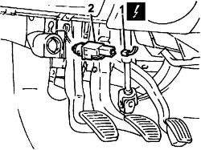

1056B78 SWITCH ON CLUTCH PEDAL - R.R (PETROL ENGINES)
- Path
- Procedures > 10 ENGINE > 1056 PETROL INJECTION SYSTEM > 1056B MULTI-POINT INJECTION SYSTEM (MPI) > 1056B78 SWITCH ON CLUTCH PEDAL - R.R (PETROL ENGINES)
- Kind
- repair procedure (removal / refitting; the operation number is the code)
- Applies to
- engines: 1.4 8v; all production periods
- Interactive page
- https://sloeber94.github.io/elrnDB-fDbl/en/#/223000131
Applies to: engines: 1.4 8v; all production periods
 Removing
Removing
 Refitting
Refitting- Turn the ignition key to the OFF position.
- Disconnect the negative battery terminal.
Description | Connector | |
|---|---|---|
- | BATTERY |
1. Disconnect the electrical connection for the clutch pedal switch.
2. Turn the clutch pedal switch (bayonet attachment) and remove from its seat on the pedal unit.
Description | Connector | |
|---|---|---|
1 | CLUTCH PEDAL SWITCH |

Applies to: engines: 1.4 8v; all production periods
Refitting
Removing- Check that the switch is not damaged.
- Position the clutch pedal switch in its seat on the pedal unit and turn to engage the bayonet attachment.
- Connect the electrical connection to the clutch pedal switch.
Description | Connector | |
|---|---|---|
- | CLUTCH PEDAL SWITCH |
- Connect the negative battery terminal.
Description | Connector | |
|---|---|---|
- | BATTERY |